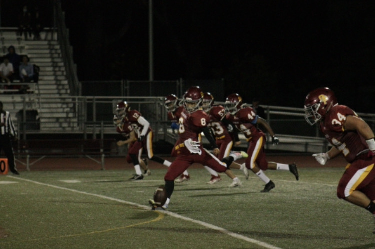

Birth(生年月日):
June, 20th, 2004
Hometown(出身地):
Funabashi, Chiba, Japan(千葉県船橋市)
Schools(出身校):
2018-2022, Cupertino High School, CA(クパティーノ高校、アメリカ・カリフォルニア州）
2023-, Hokkaido University, School of Engineering, department of Social-environmental Engineering (北海道大学工学部環境社会工学科)
Major(専攻):
Transportation Engineering, Traffic Network Analysis of Multiclass Vehicles(交通工学、混在交通化の交通ネットワーク解析)
Football Coaching Career(アメフトコーチ歴):
2026-, IBM BIGBLUE, Offense Coach(オフェンスコーチ)